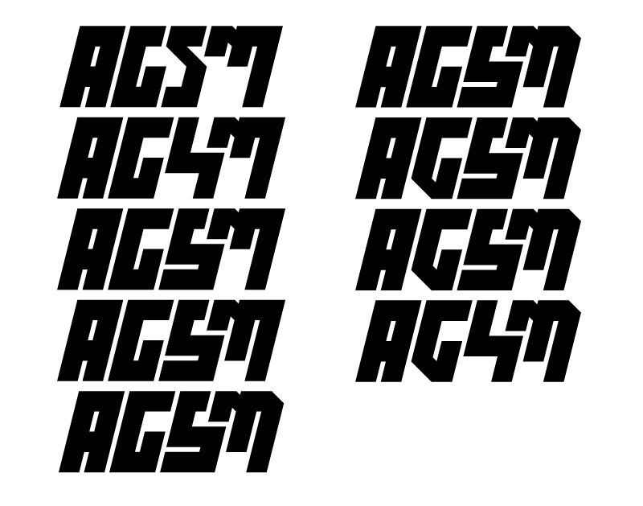

2016年 / 長期自主制作 / Adobe Illustrator CC
バイク愛好者グループのロゴを制作しました。
「頑丈で速い」スーパーモタードの強さをイメージして、見た目にもインパクトを出せるよう太く重い文字を作字しました。
車名ロゴや用品メーカーロゴに混ぜ込んでも違和感が少ないようにすることと、ステッカー等にしたときも可読性を失わないように留意して制作しました。
ロゴ作字: スーパーモタードスクアッド


2016年 / 長期自主制作 / Adobe Illustrator CC
バイク愛好者グループのロゴを制作しました。
「頑丈で速い」スーパーモタードの強さをイメージして、見た目にもインパクトを出せるよう太く重い文字を作字しました。
車名ロゴや用品メーカーロゴに混ぜ込んでも違和感が少ないようにすることと、ステッカー等にしたときも可読性を失わないように留意して制作しました。